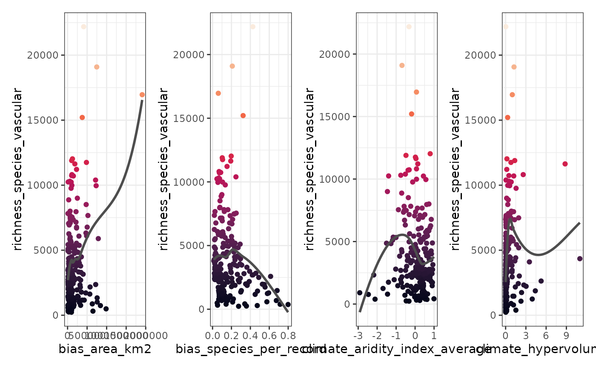

Plots the dependent variable against each predictor.
Usage
plot_training_df(
data = NULL,
dependent.variable.name = NULL,
predictor.variable.names = NULL,
ncol = 4,
method = "loess",
point.color = viridis::viridis(100, option = "F"),
line.color = "gray30"
)Arguments
- data
Data frame with a response variable and a set of predictors. Default:
NULL- dependent.variable.name
Character string with the name of the response variable. Must be in the column names of
data. If the dependent variable is binary with values 1 and 0, the argumentcase.weightsofrangeris populated by the functioncase_weights(). Default:NULL- predictor.variable.names
Character vector with the names of the predictive variables. Every element of this vector must be in the column names of
data. Optionally, the result ofauto_cor()orauto_vif()Default:NULL- ncol
Number of columns of the plot. Argument
ncolof wrap_plots.- method
Method for geom_smooth, one of: "lm", "glm", "gam", "loess", or a function, for example
mgcv::gamDefault: 'loess'- point.color
Colors of the plotted points. Can be a single color name (e.g. "red4"), a character vector with hexadecimal codes (e.g. "#440154FF" "#21908CFF" "#FDE725FF"), or function generating a palette (e.g.
viridis::viridis(100)). Default:viridis::viridis(100, option = "F")- line.color
Character string, color of the line produced by
ggplot2::geom_smooth(). Default:"gray30"
Value
A wrap_plots object.
Examples
data(
plants_df,
plants_response,
plants_predictors
)
plot_training_df(
data = plants_df,
dependent.variable.name = plants_response,
predictor.variable.names = plants_predictors[1:4]
)
